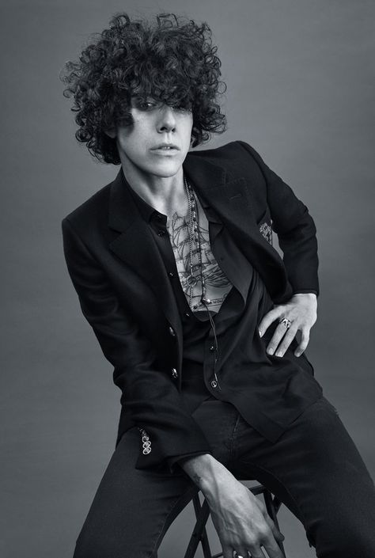

BIO
THE WORLD COULD USE MORE STRAIGHT SHOOTERS. YOU WON’T EVER HAVE TO WONDER ABOUT WHAT LP IS THINKING. SHE’LL GLADLY TELL YOU.
In fact, the singer-songwriter lays all of her cards on the table every time she makes a record. The artist’s fifth full-length—the aptly titled Heart To Mouth [BMG/Vagrant]—stands out as her most direct statement yet. No filter, no censorship, and no bullsh “When I get on the mic and start doing melodies, I can feel that direct line from my heart to my mouth,” she says. “In the past, there was a city full of streets that needed my attention. Now, I feel like I have a major highway to communicate emotion from. Whether they’re sadder songs or big anthems, they all come from the same place.” She started to pave the way for that highway on 2017’s Lost On You. Her biggest hit to date, the title track “Lost On You,” eclipsed 500 million-plus streams and went platinum in Russia, Poland, Greece, Switzerland, Italy, France, and more. The total view tally on the videos for “Lost On You,” “Muddy Waters,” and “When We’re High” surpassed 280 million within a year as Billboard, Paper, Out Magazine, V Magazine, Interview, British Vogue, and more sang her praises. In addition to show-stopping performances everywhere from The Tonight Show Starring Jimmy Fallon and The Late Late Show with James Corden to Conan and Jools Holland, she graced the stage at Coachella, Osheaga, Outside Lands, and Mad Cool. Drawing on hard-earned confidence and leveraging a position as an independent shot-caller, she began collecting ideas for this latest album as early as 2017, working hand-in-hand with Lost On You collaborator and producer Mike Del Rio [Eminem, X Ambassadors, Skylar Grey] and writer Nathaniel Campany. “I learned a lot over the years as far as what I want for myself, what I want to say, what I want to convey to people, and what I want to perform,” she continues. “I can finally portray who I want to portray and how. It all stems from freedom in my work. I don’t have to ask anybody for permission. I could be myself, and I really had some shit I wanted to say. None of us go through life unscathed, but at least you can write about it.” And write about it, she did. Heart To Mouth is the sound of an artist incapable of holding back. Instead, she speaks candidly on love, lust, fear, insecurity, infidelity, regret, and redemption. The effervescent garage-y dancefloor grind of first single and opener “Girls Go Wild” fittingly introduces her as “the outlaw of outside.” Meanwhile, the chilling piano chords of follow-up “Recovery” underscore the pain of a cheating lover as the chorus echoes raw pain and power with the admission, “I’m in recovery.” “Ironically, I wrote it from my ex’s perspective of being cheated on, and then I was in the same position myself not too long after,” admits LP. “The feeling just fucking sucks. You never truly get it until you’re on both sides. It sucks breaking somebody’s heart, but it sucks even more being heartbroken.” Elsewhere on the album, she pins a “haunted feeling” to soulful vocal fireworks on “Die For Your Love.” The delicately plucked guitar and hushed vocals of “One Night In The Sun” depict a relationship on its sad last legs from a longing, poetic perspective. Another standout, “Dreamer” hinges on a shadowy blues croon as she relays frustrations with “a lover who has big dreams but won’t put any of the scaffolding to uphold that dream.” “I can go the whole gamut of emotions in one day,” she says. “I’ve learned how to explain myself more succinctly with fewer words. That was the goal. There’s no cloying.” In the end, LP lets it all out, and the results feel damn good. “I’m lucky to have an audience that gets it,” she leaves off. “They can see and hear I went through a lot of shit to get to this point and appreciate it, because we all go through that from the cradle to the grave. I’m just here to sing about it. If you like it, great, because I love it. If not, fuck it.” LP laughs.
TOUR DATES